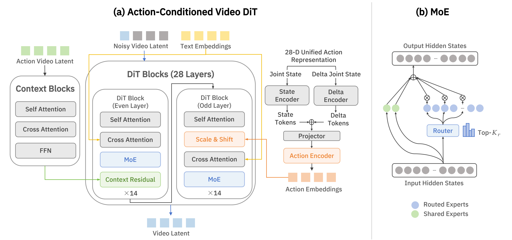

01 · Input
T + 1 frames
Configuration Sequence
tt+1t+2t+T
.52.52.57.81
−.10−.08.02.27
.31.28.19.12
.05.03.00−.08
A General World Model Simulator
for Embodied Intelligence
28-D Configurations
Whole-Arm Skeletons
Causal Distillation
Efficient Rollouts
Trajectory · Scene · Embodiment
Object · Viewpoint
Data Generation · Policy Evaluation
Action Selection · Policy Improvement
Simulating manipulation across diverse robot embodiments requires preserving precise action information while accommodating variations in robot geometry and visual context. We present World-Sim 1.0, an action-conditioned world model simulator built on a synchronized numerical and visual action interface. Unified numerical configurations specify arm-joint states and gripper or dexterous-hand states, while camera-aligned whole-arm skeleton videos rendered from the same trajectories provide explicit image-space motion guidance. A Diffusion Transformer interleaves the two conditioning pathways and uses shared-and-routed sparse experts to expand capacity with input-dependent activation. We train World-Sim 1.0 on approximately one million real-world and simulated trajectories and accelerate inference for efficient simulator rollouts.
Experiments on held-out test splits of three datasets show improved video prediction over representative action-conditioned world models, with ablations supporting the complementary action interface and sparse architecture. Qualitative studies further examine generalization across trajectory, scene appearance, embodiment, object, and viewpoint shifts. Beyond video prediction, generated rollouts support data generation for policy training, while a fine-tuned vision–language model (VLM) evaluator supplies task-conditioned feedback for policy evaluation and ranking, action selection, and policy improvement. In separate RoboTwin studies, action selection using predicted outcomes and VLM scores increases success by 20.6 percentage points over single-sample execution, while policy optimization with imagined rollouts and VLM-derived rewards improves mean success by 12.7 percentage points over supervised initialization. We will release model checkpoints and inference code to support further research.
World-Sim 1.0 predicts future observations from an initial RGB image, a frame-aligned robot-configuration trajectory, and an optional task instruction. The trajectory supplies numerical configurations and, through URDF rendering with camera calibration, synchronized visual action conditions.
gripper state
Open
Transitional
Closed

In the 28-layer Cosmos-Predict 2.5 DiT, numerical action embeddings apply scale and shift within odd-indexed blocks; action-video Context Blocks add aligned residuals after even-indexed blocks. Indices are zero-based.
Each side occupies 14 dimensions: seven arm joints, one parallel-gripper opening, and six hand joints. Unused joints and absent sides are zero-filled. Both action conditions span the conditioning frame and all target frames.
Every main DiT block uses one always-active shared expert and eight routed experts, with two routed experts selected per token. This expands capacity through input-dependent activation.
The corpus combines AgiBotWorld Beta, RealSource World, and RoboMIND with LIBERO, ManiSkill2, RoboTwin, and RoboCasa. A 90% / 5% / 5% training, validation, and test partition is established before clip extraction. Video prediction is evaluated on held-out splits of AgiBotWorld Beta, RoboMIND, and RoboTwin; baselines are retrained on the same mixed-domain corpus.
World-Sim 1.0 achieves the best scores on all five video-quality metrics and the adapted EWMBench overall score among the methods evaluated on each dataset.
PSNR over the best baseline
EnerVerse-AC → World-Sim
17.640 → 22.276 dB
PSNR over the best baseline
Ctrl-World → World-Sim
21.770 → 23.850 dB
PSNR over the best baseline
Ctrl-World → World-Sim
20.040 → 30.383 dB
| Method | PSNR ↑ | SSIM ↑ | LPIPS ↓ | FID ↓ | FVD ↓ | Overall ↑ |
|---|---|---|---|---|---|---|
| AgiBotWorld Beta | ||||||
| IRASim | 15.796 | 0.544 | 0.028 | 64.418 | 62.548 | 3.571 |
| Ctrl-World | 17.550 | 0.682 | 0.022 | 46.600 | 45.100 | 4.401 |
| OSCAR | 16.644 | 0.608 | 0.023 | 27.805 | 32.241 | 4.303 |
| Wan-Move | 12.610 | 0.429 | 0.447 | 88.496 | 95.260 | 3.244 |
| EnerVerse-AC | 17.640 | 0.769 | 0.023 | 19.510 | 21.390 | 4.431 |
| World-Sim 1.0 | 22.276 | 0.796 | 0.013 | 14.640 | 10.850 | 4.997 |
| RoboMIND | ||||||
| IRASim | 20.102 | 0.709 | 0.019 | 44.597 | 43.414 | 3.079 |
| Ctrl-World | 21.770 | 0.716 | 0.015 | 21.800 | 16.700 | 4.276 |
| EnerVerse-AC | 17.930 | 0.680 | 0.293 | 67.350 | 63.690 | 2.982 |
| World-Sim 1.0 | 23.850 | 0.835 | 0.012 | 17.610 | 15.930 | 4.666 |
| RoboTwin | ||||||
| IRASim | 17.121 | 0.666 | 0.025 | 69.777 | 57.350 | 3.383 |
| Ctrl-World | 20.040 | 0.804 | 0.016 | 31.400 | 26.600 | 3.971 |
| EnerVerse-AC | 19.680 | 0.779 | 0.221 | 32.450 | 29.700 | 3.610 |
| World-Sim 1.0 | 30.383 | 0.942 | 0.006 | 8.910 | 4.980 | 5.044 |
Action-conditioned rollouts across seven real-world and simulated data sources, including parallel-gripper and dexterous-hand embodiments.
The four-step causal simulator supports data generation and policy applications. A fine-tuned Qwen3-VL-2B-Instruct evaluator supplies task-conditioned success, progress, and visual-validity scores for policy evaluation, action selection, and policy improvement, and remains frozen during downstream use.
DATA GENERATION
World-Sim generates ten rollouts per demonstration from edited initial frames and the original actions. With 10, 30, and 50 randomized demonstrations per task, π0.5 success improves from 28.5%, 57.0%, and 70.0% to 64.5%, 87.0%, and 93.0%, respectively (Table 9). A separate cross-domain study reaches 72.0% using 50 clean and 500 generated trajectories, compared with 70.0% using 50 directly collected randomized trajectories (Table 8). Both studies use 200 unseen evaluation seeds per task.
Five qualitative studies examine action-conditioned prediction under controlled changes in trajectory, scene appearance, embodiment, object, and viewpoint.
GPT-Image-2 edits the initial scene while preserving the task, robot pose, and spatial layout. The original actions condition pants-folding rollouts across six edited environments.
Core contributors · Shilong Zou, Shilin Zhang
Shilong Zou: data preparation, model architecture design, world-model training, and downstream policy training. Shilin Zhang: data preparation, downstream policy training, and visualization of experimental results.
Contributors
Yingji Zhang, Yuhang Huang, Yi Zhang, Zeyuan Ding, Han Dong, Junwei Liao
Tech leads
Yong Dai, Shilong Zou
Corresponding authors
Jian Tang, Xiaozhu Ju
Contact: jack.zou@x-humanoid.com · vito.dai@x-humanoid.com · jian.tang@x-humanoid.com · jason.ju@x-humanoid.com.
@techreport{worldsim2026,
title={World-Sim 1.0: A General World Model Simulator for Embodied Intelligence},
author={{Beijing Innovation Center of Humanoid Robotics (X-Humanoid), WFM System Group}},
institution={Beijing Innovation Center of Humanoid Robotics (X-Humanoid)},
year={2026},
month={September},
note={Technical report, September 9, 2026}
}